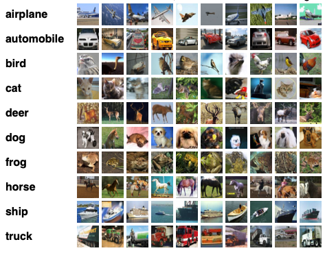
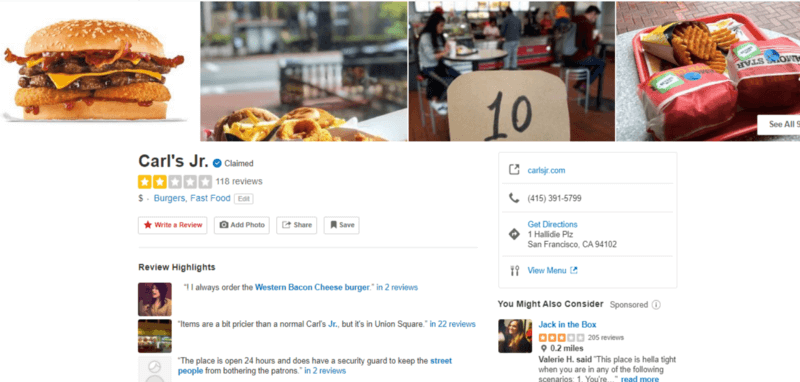
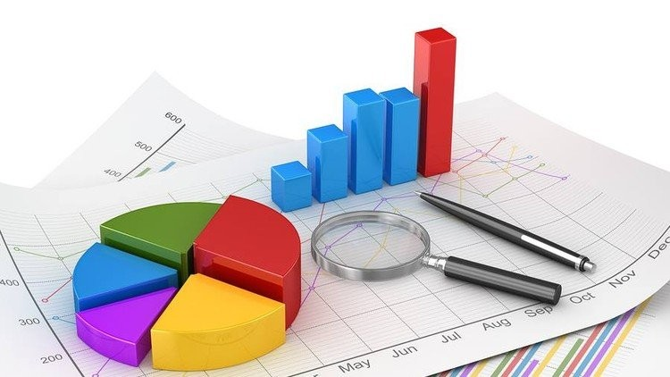

In this project, BERTopic model was used to identify main themes
behind stock market using earnings call transcripts between 2020 and 2022 from 40 different diverse companies
listed on S&P500. Data pre-processing done using Natural Language Process (NLP) techniques
such as tokenization, stopwords removal and vectorisation to convert data into suitable format. The model generated six different
topics that represent industry based themes such as the recovery of tourism & airline companies and the emergence of AI and data.

In this project, I experiemented with three different architectures to classify CIFAR-10 dataset. The Multi-Layer Percepton, Convolutional Neural Network & Pretrained Model with transfer learning models achieved 53%, 83% and 93% accuracy respectively.
In this project, I used XGBoost to predict wine quality by categorising them into high, medium or low. Besides, I also identified the top 3 features for predicting wine quality, which are alcohol, free sulfur dioxide and volatile acidity

In this project, I collected reviews from Yelp using BeautifulSoup's Web-Scrapping package. Then categorised each review into score of 1 to 5 for sentiment analysis using VADER transformer.
For this project, we utilised Gemini API to help us label company's earnings call transcript data for sentiment analysis. Gemini accurately labelled each batch of transcript into positive, neutral and negative evaluated based on human evaluation.
In this project, we conducted comprehensive research on the challenges of adopting cashless payments in hawkers, identifying key barriers such as cost, usage, tradition and value.
Provided analysis for comparison on different payment methods such as cash, e-payments and cards, pinpointing their advantage and disadvantages.
Incorporated value creators and pain relievers based on the analysis to our proposed smartphone-based payment gateway.

This project invloved developing a financial model in Microsoft Excel to assess the feasibility of launching an e-commerce business selling PC accessories (mouse, keyboards, headphones) sourced from Chinese suppliers. This includes market analysis using historical sales data from competitor stores to analyze seasonality, trends and growth rate.
Sensitivity analysis using Excel's data tables to model impact of different pricing strategies and price-demand elasticities on profitability. Excel's Solver function to determine optimal pricing for each product.